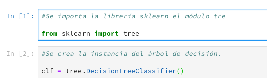

Visualización de Árbol de decisión
Posted on dom 17 junio 2018 in Tutorial Python • 2 min read
Como en Noviembre del año pasado, escribí un artículo sobre árboles de decisión con Python, donde se tenía una serie de datos de entrada (altura, peso y talla) y de salida si era hombre o mujer. Para este artículo lo que se va a agregar es la visualización del árbol de decisión, para ello se usarán dos librerías de Python pydot y graphviz.
Se da por sentado que ya se tiene instalado scikit-learn, se instala entonces pydot y graphviz:
#pip3 install pydot
#pip3 install graphviz
Ahora se muestra el código:

Ahora toca la visualización del árbol:


Para terminar se muestra el grafo del árbol:

Este grafo se genera a partir de la instancia de la clase que se usa para ingresar los datos, se entrena, y se usa para predecir con nuevos datos. La información que muestra cada nodo de decisión:
- Samples: La cantidad de muestras que se maneja.
- gini: Es un indice que indica el costo de la evaluación de separar los datos.
- value: Es un valor que se está evaluando en ese momento.
El código de este artículo lo pueden ver en el notebook que se encuentra en el repositorio de gitlab.
En próximo artículo se hará otro ejemplo ya con un mayor conjunto de datos.
Sí tienes algun pregunta u observación, puedes hacerlo en los comentarios del post.
¡Haz tu donativo! Si te gustó el artículo puedes realizar un donativo con Bitcoin (BTC) usando la billetera digital de tu preferencia a la siguiente dirección: 17MtNybhdkA9GV3UNS6BTwPcuhjXoPrSzV
O Escaneando el código QR desde la billetera: